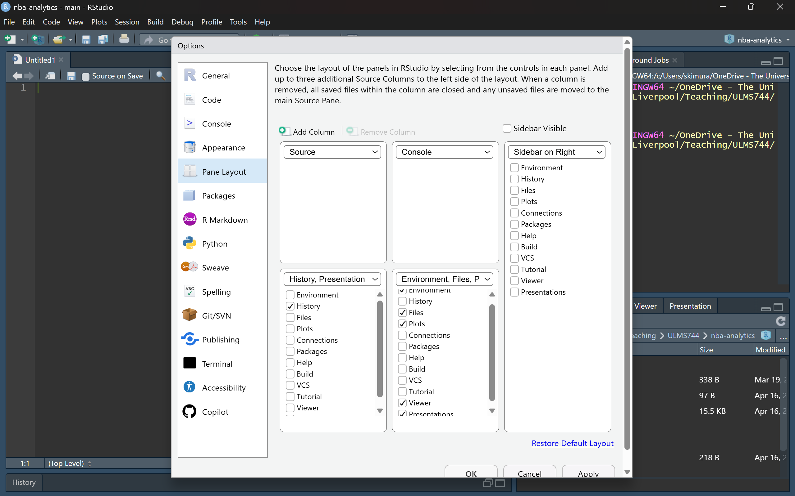

RStudio Terminal
node --version
npm --versionA basic guide to running an AI coding assistant in your terminal
AI coding assistants that live inside your terminal have become a standard part of the modern data-science workflow. This workbook walks you through installing Claude Code — Anthropic’s official CLI — and points out that the setup is essentially the same for OpenAI’s Codex CLI, which is a direct alternative. By the end you will be able to open a terminal in any project folder, type a single command, and start working with an AI assistant that can read and edit your files.
Both Claude Code and Codex require a paid subscription to the underlying provider to use them for real work:
Free-tier accounts will not let you sign in to the CLI. Make sure you have an active subscription before following the install steps below.
You only need to do this setup once per machine. After that, starting Claude Code in a new project is a single command.
All command-line steps in this workbook use the Terminal tab inside RStudio (not the R Console). If you are unsure where that is:

By the end of this workbook, you will be able to:
npm.Both Claude Code and Codex are distributed as Node.js packages, so you need Node installed first.
Node.js is a program that runs JavaScript code outside of a web browser — on your laptop, directly from the terminal. Think of it as the equivalent of R itself: a runtime that executes code written in a specific language.
npm (Node Package Manager) comes bundled with Node.js. It is the JavaScript world’s equivalent of install.packages() in R — a tool for downloading and installing reusable pieces of software called packages.
A Node.js package is just a bundle of JavaScript code that someone else has written and published so others can install it with one command. Claude Code and Codex are both published as packages, which is why installing them is a single npm install line rather than a multi-step setup.
In short: Node.js runs the code, npm installs the code, and Claude Code is the code.
Go to https://nodejs.org/ and download the LTS (Long Term Support) installer for your operating system. Run it and accept the defaults — there is nothing unusual to configure.
Open a fresh terminal (in RStudio: Tools → Terminal → New Terminal, or any system terminal) and run:
RStudio Terminal
node --version
npm --versionYou should see two version numbers printed back (for example v20.11.0 and 10.2.4). If you get “command not found”, close and reopen the terminal — the installer updates your PATH and the old terminal will not have picked it up yet.
If you are on Windows and the command is still not found after reopening the terminal, restart your computer. This forces every shell to re-read the updated PATH.
With Node installed, install Claude Code globally via npm:
RStudio Terminal
npm install -g @anthropic-ai/claude-codeThe -g flag installs the claude command system-wide so you can run it from any folder.
Verify the install:
RStudio Terminal
claude --versionNavigate into a project folder and start Claude Code:
RStudio Terminal
cd path/to/your/project
claudecd do?
cd stands for change directory. It is the terminal equivalent of double-clicking into a folder in Finder or File Explorer — it moves your current working location to the folder you specify. For example, cd ~/Documents/nba-analytics moves you into the nba-analytics project folder.
This matters because Claude Code only sees the folder you launch it from. Once you run claude inside a project folder, that folder becomes the assistant’s entire world: it can read, edit, and reason about any file inside it (and its subfolders), but it cannot see anything outside. If you launch claude from the wrong folder — say, your home directory — it will not know about your project files at all.
In short: cd first, then claude. The assistant understands everything within the folder you started it in.
On the very first run, Claude Code will open a browser window and ask you to sign in with your Anthropic account. After that, subsequent launches use the saved credentials — no login prompt required.
Codex CLI is OpenAI’s equivalent of Claude Code. The install flow is essentially identical — same Node.js prerequisite, same npm global install pattern:
RStudio Terminal
npm install -g @openai/codexLaunch it with:
RStudio Terminal
codexCodex will prompt you to sign in with an OpenAI account on first run. You can have both Claude Code and Codex installed side-by-side and switch between them depending on which model you prefer for a given task.
The rest of this workbook focuses on Claude Code, but every tip below (shortcuts, RStudio layout) applies just as well to Codex. The two tools behave very similarly.
A handful of keyboard shortcuts and small habits make a big difference once you start using the CLI day-to-day.
Ctrl + CIf Claude is in the middle of a long response or running a tool you didn’t mean to trigger, press Ctrl + C to interrupt. The assistant stops immediately and returns control to the prompt. This is the single most important shortcut to remember.
Ctrl + C once interrupts the current action.Ctrl + C twice in a row exits Claude Code entirely.Type /exit and press Enter, or press Ctrl + D on an empty line. Both close the session cleanly.
Typing / at the start of a prompt shows a menu of built-in commands. Useful ones to know:
/help — list all available commands./clear — reset the conversation context (start fresh without restarting the CLI)./cost — show how much the current session has cost so far./exit — quit.Claude Code treats the folder you launched it from as the project root. Launching from the wrong folder means the assistant cannot see the files you expect.
In RStudio, the easiest way to do this is to set your working directory first, then launch Claude from that same folder:
.Rproj file, which sets it automatically) and point it at your project folder.cd anywhere.claude and press Enter.That way your R Console and Claude Code are both operating on the same project folder, and Claude sees exactly the files you are working with.
When Claude proposes a file edit, it shows a diff and asks for confirmation. Read the diff — don’t just press “yes”. This is the single biggest difference between using an AI assistant well and letting it silently break your code.
Claude Code runs in a terminal. RStudio has a built-in terminal pane, so you can keep everything inside one window. The default RStudio layout puts the terminal in a small tab next to the Console, which is cramped. A much better layout splits the window into two source columns: one for your .R / .qmd files, and one for the terminal where Claude is running.
Open Tools → Global Options → Pane Layout. You should see a dialog similar to this:

Configure it as follows:
Once the layout is applied:
.R or .qmd files you are working on.Shift + Alt + T).claude.You now have your code on the left, Claude Code on the right, and everything else (plots, files, help) tucked into the sidebar. Edits that Claude makes appear in the open source files immediately — RStudio will prompt you to reload the file if it has changed on disk.
If you prefer, you can also run Claude Code in a standalone terminal (Windows Terminal, iTerm2, etc.) next to the RStudio window. The layout advice above is for people who want a single unified window.
npm install -g @anthropic-ai/claude-code, launch with claude.npm install -g @openai/codex, launch with codex.Ctrl + C to interrupt and /exit to quit.With this setup in place, every subsequent project just needs cd project-folder and claude — nothing more.